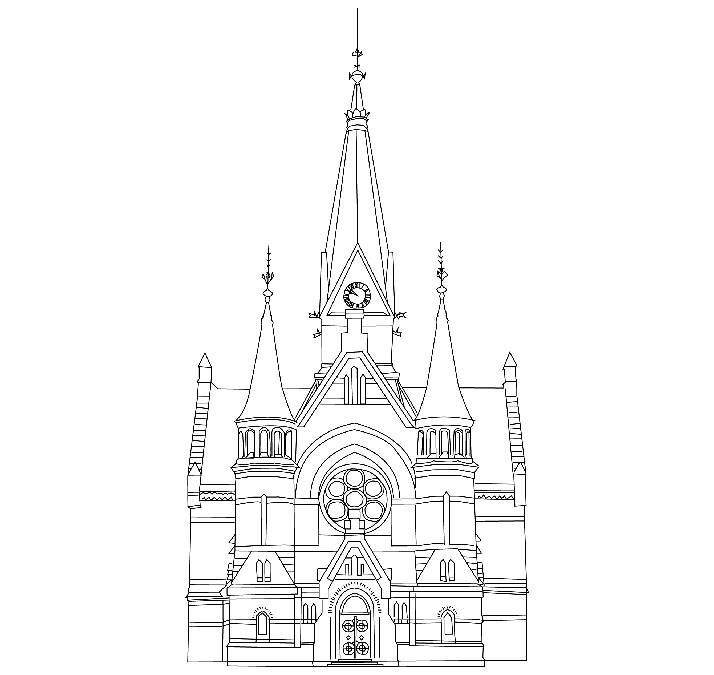

Kjekt å vite
Her finner du alt du ikke visste at du lurte på om Sagene, eller i alle fall det jeg synes du bør vite noe om.

Her finner du alt du ikke visste at du lurte på om Sagene, eller i alle fall det jeg synes du bør vite noe om.
Sagene er en bydel med mye historie, og her er litt fakta du kanskje ikke visste.
Kilde: snl.no/Sagene
Sagene ligger lett tilgjengelig, med gode bussforbindelser. Disse tre bussene stopper her, og kan ta deg langt i Oslo.
En av de beste tingene med Sagene er at det er så kort vei til mange andre fine områder. Her er noen forslag til hvor turen kan gå videre: